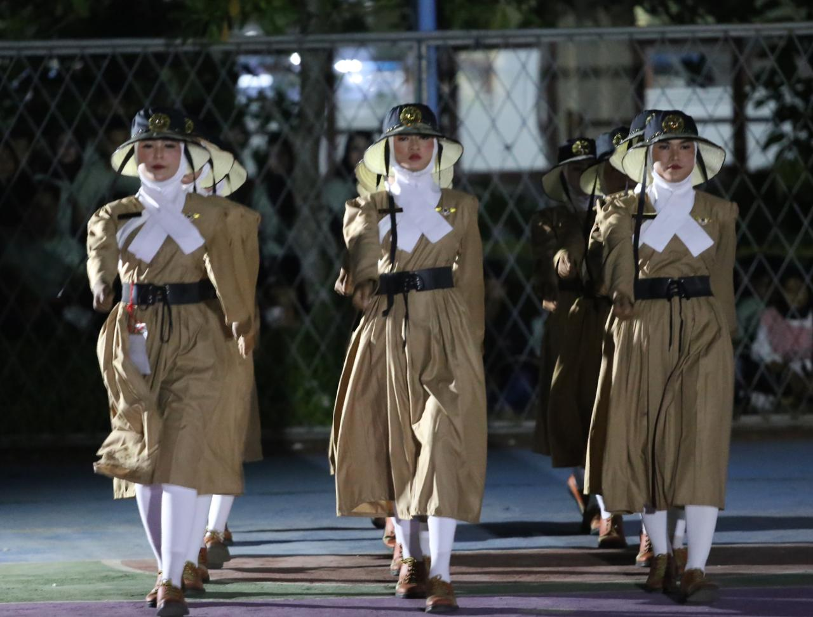

Saat memasuki jenjang SMP, saya jadi lebih aktif mengikuti kegiatan sekolah dan suka mencoba banyak hal baru. Saya mengikuti ekskul paskibra dan beberapa kali ikut lomba pasko bersama tim sekolah. Selain itu, saya juga mengikuti ekstrakurikuler silat yang membuat saya belajar lebih disiplin, kuat, dan tidak mudah menyerah. Dari semua kegiatan itu, saya jadi belajar pentingnya kerja sama, kekompakan, dan tanggung jawab.
Selama SMP, saya juga pernah mengajar Pramuka untuk anak-anak SD. Pengalaman itu menjadi salah satu hal yang menyenangkan dan berkesan bagi saya karena saya bisa berbagi ilmu sekaligus belajar menjadi pribadi yang lebih sabar, percaya diri, dan bertanggung jawab.